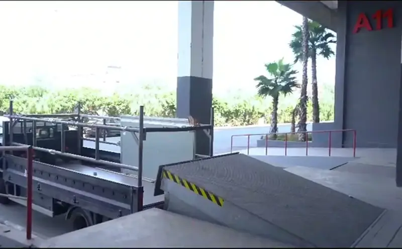
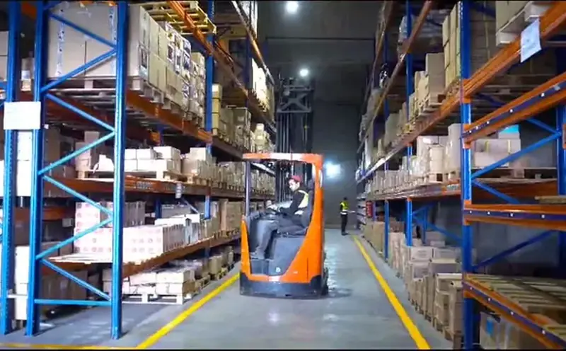

En bref : la logistique e-commerce externalisée confie à un prestataire le stockage, la préparation, la livraison et souvent l’encaissement des commandes en ligne. Au Maroc, Tecxodus prend en charge toute la chaîne : intégration de la boutique au WMS, préparation à partir de 0,50 DH par ligne, livraison à 30 DH partout au Maroc et collecte du cash à la livraison.
Toute la chaîne e-commerce, d’un seul prestataire
La plupart des vendeurs marocains combinent un entrepôt, une société de livraison et un suivi manuel du cash dans un tableur. Chaque passage de relais crée des écarts : stock affiché faux, colis non tracés, encaissements à réclamer. Tecxodus réunit ces étapes dans le même système.
- Intégration de la boutique : Shopify, YouCan, WooCommerce et Jumia interfacés avec notre WMS, notre TMS et notre tour de contrôle.
- Réception et stockage : contrôle des arrivages par référence, rangement, suivi du stock disponible à la vente. Surface de 100 à 20 000 m² à Aïn Sebaâ, Casablanca.
- Préparation de commandes : picking, contrôle, emballage et étiquetage par des préparateurs formés aux standards internationaux.
- Livraison : équipe de livraison Tecxodus à Casablanca, Rabat, Marrakech, Tanger et les grandes villes ; réseau de partenaires (Aramex, Amana, CTM, Ozon, Sendit et Cathedis) pour le reste du pays.
- Encaissement COD : collecte du cash à la livraison, rapprochement commande par commande, reversement au vendeur.
- Retours et reverse logistics : colis refusés ou retournés contrôlés, remis en stock ou isolés, statut mis à jour.
- Pilotage : accès WMS pour le stock, tour de contrôle pour les commandes, les livraisons et le cash.




Boutiques et marketplaces connectées
| Plateforme | Ce qui est synchronisé | Guide |
|---|---|---|
| Shopify | Commandes, stock disponible, statut d’expédition et numéro de suivi | Shopify au Maroc |
| YouCan | Commandes confirmées, stock, statut de livraison et encaissement COD | YouCan et logistique |
| WooCommerce | Commandes, niveaux de stock, statuts de commande | WooCommerce au Maroc |
| Jumia | Commandes vendeur, préparation et remise des colis | Vendre sur Jumia |
Votre boutique tourne sur une autre solution, ou vos commandes sont prises par téléphone, Instagram ou WhatsApp ? Les commandes peuvent aussi être transmises au WMS par fichier, selon un format défini ensemble.
Livraison partout au Maroc et collecte du cash
Au Maroc, le paiement à la livraison reste le mode de paiement dominant du e-commerce. Le vendeur ne gagne de l’argent qu’au moment où le cash est encaissé et reversé. C’est pourquoi Tecxodus suit chaque commande jusqu’à cette étape, pas seulement jusqu’à la remise au transporteur.
Dans les grandes villes (Casablanca, Rabat, Marrakech, Tanger et les grandes villes), la livraison est faite par l’équipe Tecxodus. Ailleurs, le colis part chez un partenaire : Aramex, Amana, CTM, Ozon, Sendit et Cathedis. Dans les deux cas, le statut remonte dans la même tour de contrôle et l’encaissement est rapproché commande par commande. Pour comprendre l’impact des refus sur votre marge, lisez notre guide sur le paiement à la livraison et les retours au Maroc.
Tarifs de la logistique e-commerce
Exemples de tarifs Tecxodus, confirmés au devis selon vos volumes et vos produits :
| Service | Tarif Tecxodus | Repère de marché |
|---|---|---|
| Stockage | 3 DH par palette et par jour (≈ 90 DH par mois) | 40 à 80 MAD par m² et par mois |
| Préparation de commande | 0,50 DH par ligne de commande | 5 à 15 MAD par colis |
| Livraison | 30 DH partout au Maroc | 20 à 25 DH en ville, plus hors des grandes villes |
| Emballage, retours, encaissement, services à la carte | au tarif du marché, chiffrés au devis | selon prestataire |
Repères consultés le 18/11/2026 : clarodigi.com (stockage et préparation), cathedis.ma et livo.ma (livraison).
Exemple : une boutique qui expédie 1 500 commandes par mois, à 2 lignes par commande, avec 20 palettes en stock, paie environ 1 800 DH de stockage, 1 500 DH de préparation et 45 000 DH de livraison, soit environ 32 DH par commande livrée, hors emballage et encaissement. Le détail du calcul est dans notre guide prix du fulfillment au Maroc.
Volumes, pics et qualité de préparation
Les volumes varient beaucoup d’un client à l’autre, d’une boutique qui démarre à une marque nationale. L’organisation Tecxodus est dimensionnée pour traiter jusqu’à 1 000 000 de commandes par an. Les préparateurs sont formés aux standards internationaux de préparation, d’étiquetage (GS1) et de contrôle avant expédition. Pendant les pics, comme le Ramadan, le White Friday ou une campagne d’influence, des renforts sont planifiés à partir de vos prévisions.
Ils nous ont confié leur logistique
- Jumia
- Marjane
- Mars
- L’Oréal
- LG
- Samsung
- Oraimo
- Dell
- Ministère de la Santé
Marques internationales, distribution, électronique, grande consommation et secteur public : Tecxodus applique les procédures et les exigences de reporting de chaque client.
Retours et reverse logistics
Un colis refusé ou retourné n’est pas perdu s’il revient vite en stock. À son retour, Tecxodus contrôle l’état du produit et de l’emballage, le remet en stock vendable ou l’isole, puis met à jour le statut dans le WMS. Le vendeur voit le stock récupéré et les produits à traiter. Pour le détail, lisez comment gérer un retour e-commerce en entrepôt.
Démarrer avec Tecxodus
- Analyse : vous envoyez vos volumes, vos références et votre plateforme ; nous revenons avec un devis.
- Intégration : connexion de la boutique ou de la marketplace au WMS, tests sur des commandes réelles.
- Transfert du stock : réception et contrôle de votre marchandise, création des emplacements.
- Lancement : préparation, livraison et encaissement des premières commandes, avec un suivi rapproché.
- Pilotage : revue des indicateurs (délai, refus, retours, cash) et ajustement avant les pics.
Pour bien préparer cette étape, consultez notre guide pour externaliser sa logistique e-commerce au Maroc.
Ce qu’il faut nous envoyer pour un devis
- votre plateforme : Shopify, YouCan, WooCommerce, Jumia ou autre ;
- le nombre de références et le stock moyen (en palettes ou en cartons) ;
- le nombre de commandes par mois, en moyenne et en pic ;
- le nombre moyen de lignes par commande et le type d’emballage ;
- les villes livrées et la part des commandes payées à la livraison.
Questions fréquentes
Combien coûte la logistique e-commerce externalisée au Maroc ?
Exemples de tarifs Tecxodus : stockage à 3 DH par palette et par jour, préparation à 0,50 DH par ligne de commande, livraison à 30 DH partout au Maroc. Le devis final dépend de vos volumes, de vos produits et des services retenus (emballage, retours, encaissement). Repères de marché : 20 à 25 DH par livraison en ville chez les sociétés de livraison, 5 à 15 MAD par colis préparé.
Quelles boutiques en ligne pouvez-vous connecter ?
Tecxodus connecte les boutiques Shopify, YouCan et WooCommerce, ainsi que la marketplace Jumia, à son propre WMS, à son TMS et à sa tour de contrôle. Les commandes arrivent dans le WMS, le stock disponible remonte vers la boutique et le statut de livraison suit chaque colis.
Livrez-vous dans tout le Maroc ?
Oui. L’équipe de livraison Tecxodus livre Casablanca, Rabat, Marrakech, Tanger et les grandes villes. Les autres villes sont couvertes par nos partenaires : Aramex, Amana, CTM, Ozon, Sendit et Cathedis. Exemple de tarif : 30 DH par livraison partout au Maroc.
Gérez-vous le paiement à la livraison (COD) ?
Oui. Tecxodus gère la chaîne jusqu’à la collecte du cash : le livreur encaisse le montant de la commande, l’encaissement est rapproché commande par commande, puis reversé au vendeur selon les modalités prévues au contrat.
Que se passe-t-il quand un client refuse le colis ?
Le colis revient à l’entrepôt et suit le processus de reverse logistics : contrôle de l’état, remise en stock si le produit est vendable ou mise de côté, mise à jour du statut dans le WMS et visibilité pour le vendeur.
Quel volume de commandes pouvez-vous absorber ?
Les volumes varient selon les clients. L’organisation Tecxodus est dimensionnée pour traiter jusqu’à 1 000 000 de commandes par an, avec des préparateurs formés aux standards internationaux de préparation et des renforts pendant les pics.
Puis-je suivre mon stock et mes commandes en temps réel ?
Oui. Chaque client dispose d’un accès au WMS pour le stock et les préparations. La tour de contrôle suit les commandes jusqu’à la livraison et à l’encaissement.
Quels clients vous font confiance ?
Jumia, Marjane, Mars, L’Oréal, LG, Samsung, Oraimo, Dell et le Ministère de la Santé ont confié des opérations logistiques à Tecxodus.
Une marque étrangère peut-elle vendre au Maroc avec Tecxodus ?
Oui. Tecxodus réceptionne la marchandise importée en lien avec votre transitaire, la stocke à Casablanca, prépare les commandes de votre boutique ou de votre marketplace, livre et encaisse en COD. La page en anglais détaille l’offre pour les marques internationales.
Que faut-il envoyer pour obtenir un devis ?
Votre plateforme (Shopify, YouCan, WooCommerce, Jumia ou autre), le nombre de références, le stock moyen en palettes, les commandes par mois et en pic, le nombre de lignes par commande et les villes livrées.